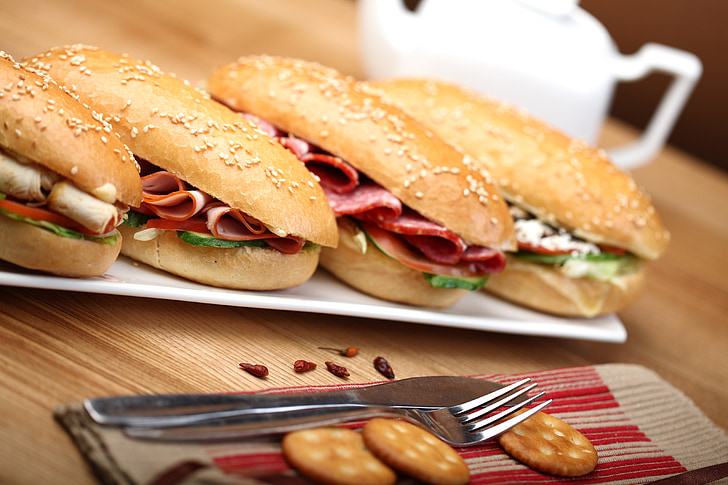

Ploughmans Sanswhich

https://creativecommons.org/publicdomain/zero/1.0/
Ingredients
2 slices crusty bread
1 teaspoon butter, softened
handful of arugula
2 sweet gherkin pickles, sliced
3 slices smoked ham
2 slices white Cheddar cheese
1 small tomato, sliced
1 teaspoon whole grain mustard
Steps
- Lightly butter both slices of bread.
- Layer the arugula, pickles, ham, Cheddar, and tomatoes on one slice of buttered bread.
Spread the mustard on the remaining buttered bread slice, and place on top. Cut sandwich
in half, and serve.
Home